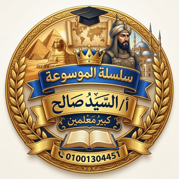

درس لعبة
مع أ/ السَّيِّد صَالِح
كبير معلمين • سلسلة الموسوعة
الصَّفُّ الثَّانِي الإِعْدَادِيُّ - الخَرَائِطُ: مُرَاجَعَةُ خَرَائِطِ الفَصْلِ الدِّرَاسِيِّ الأَوَّلِ
الدِّرَاسَاتُ الاجْتِمَاعِيَّةُ


الدِّرَاسَاتُ الاجْتِمَاعِيَّةُ
اكتب اسمك ثنائي أو ثلاثي عشان نتيجتك توصل للأستاذ